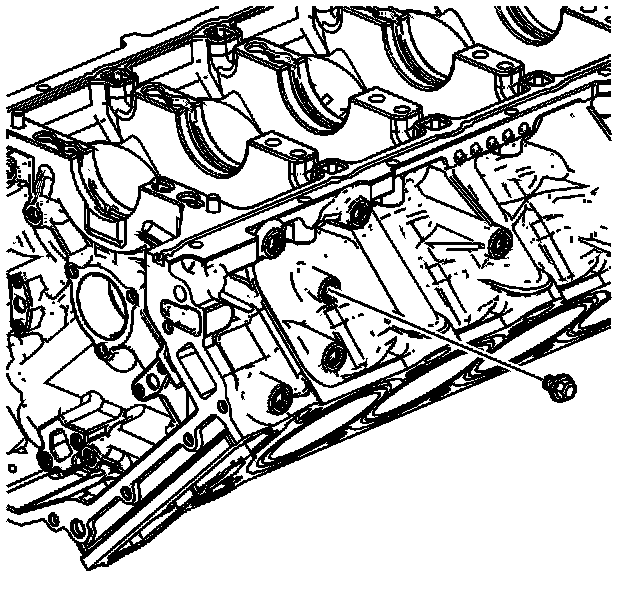
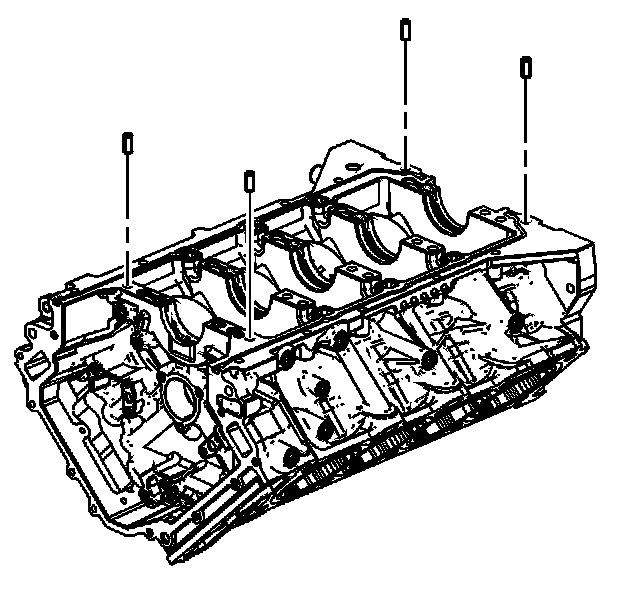
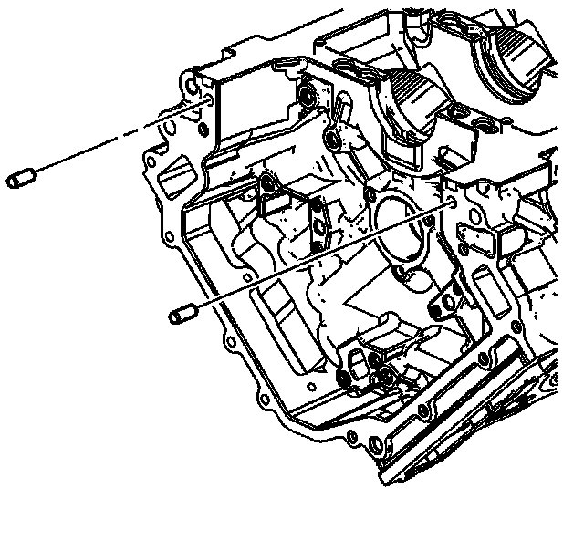
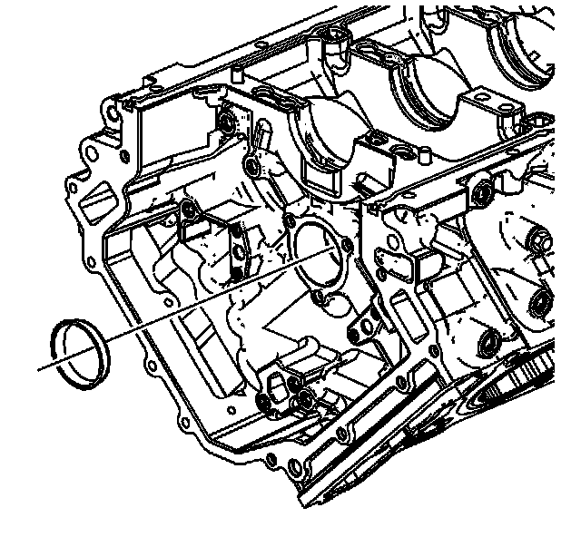
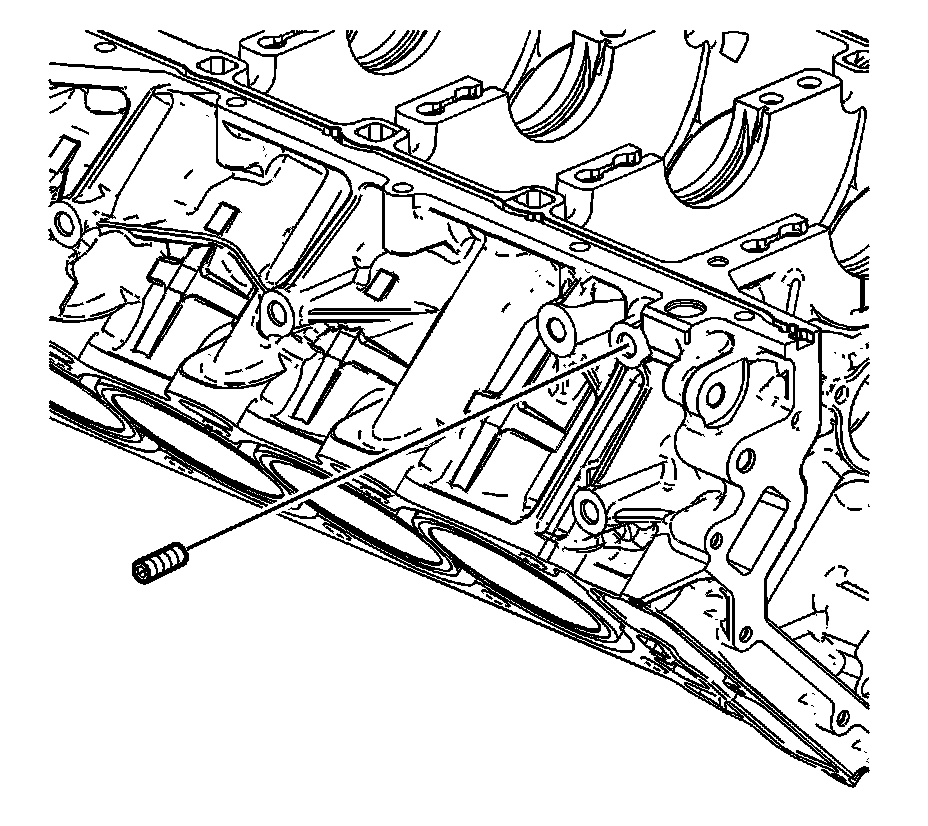
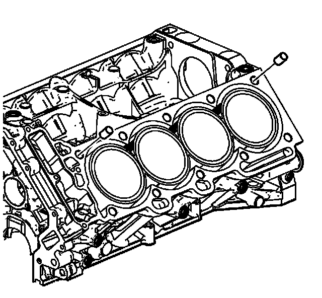
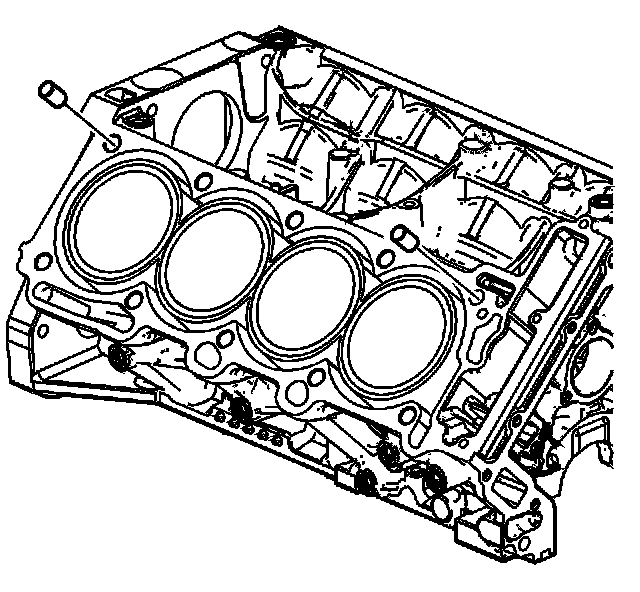
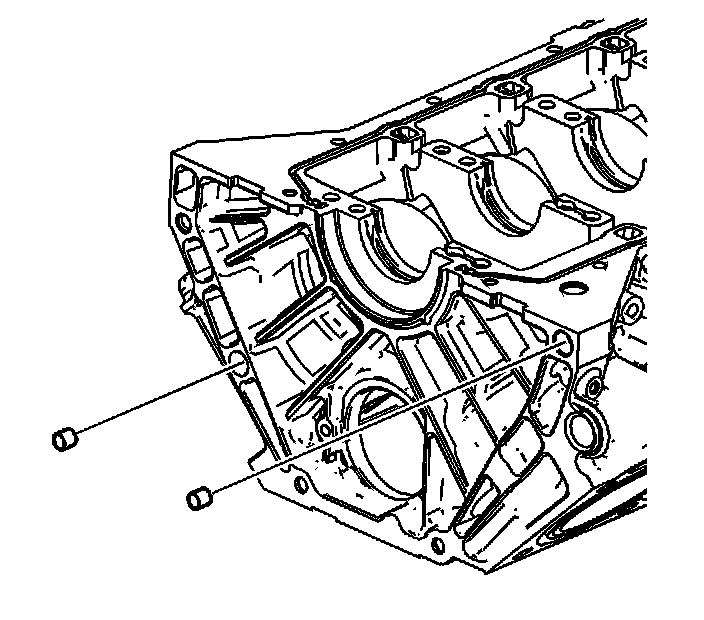

46. Engine Block Disassemble - Upper
Engine Block Disassemble - Upper

1. Remove the engine coolant drain plug.

2. Remove the engine block to crankcase pins.

3. Remove the engine block to engine front cover pins.

4. Remove and discard the camshaft intermediate drive shaft block plug.

Important: Not all blocks will have the hex set stud installed. If the block being serviced has a hex set stud installed, and the hex set stud is removed, a NEW hex set stud must be reinstalled in the same location.
5. If required, remove and discard the hex set stud

6. Remove the left side block deck face to left cylinder head dowels.

7. Remove the right side block deck face to right cylinder head dowels.

8. Remove the engine block to transmission dowels.